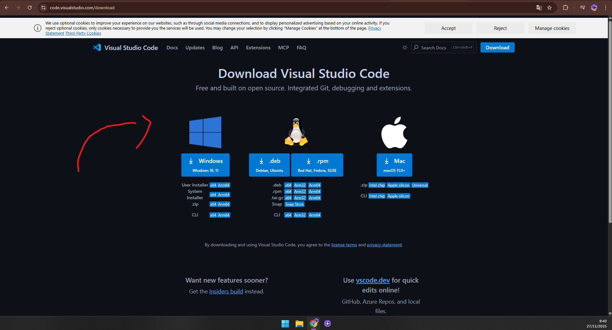
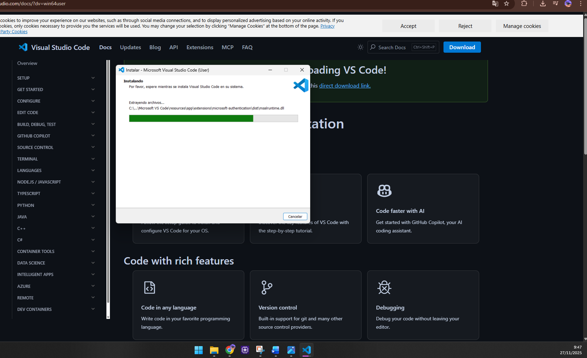
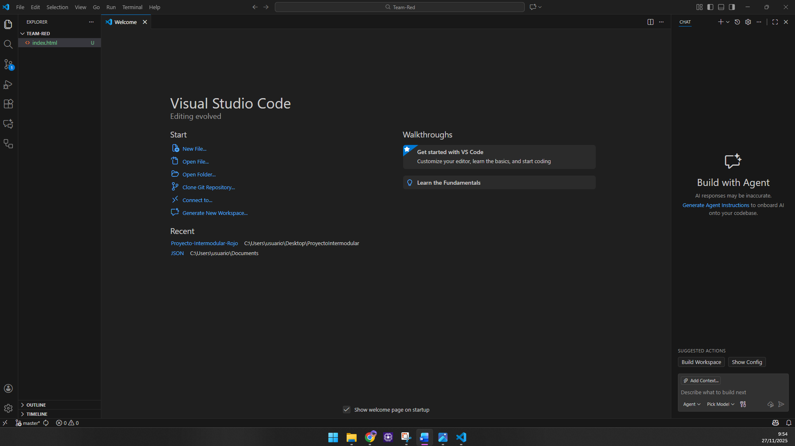
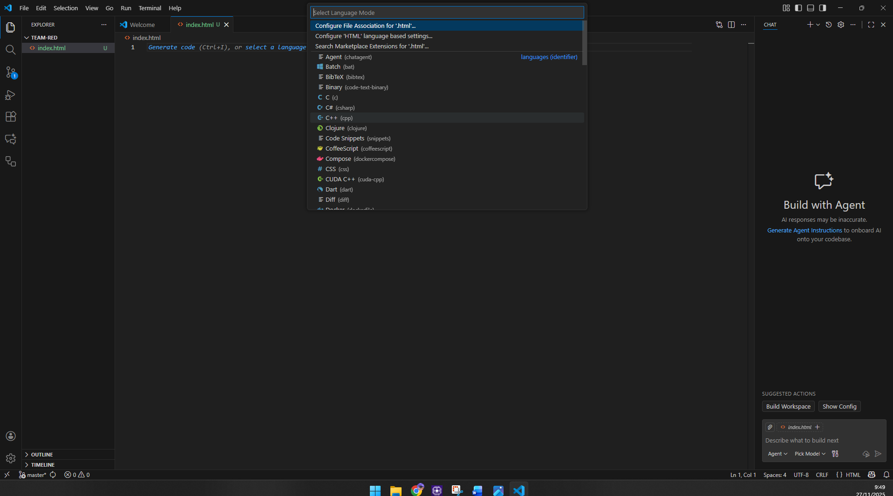

Eclipse IDE
Eclipse es un entorno de desarrollo muy utilizado, sobre todo para programar en Java. Es gratuito, de código abierto y permite instalar módulos, cambiar el aspecto del IDE, actualizar el entorno fácilmente y trabajar con muchos lenguajes gracias a extensiones. Es un IDE pensado para estudiantes y profesionales que necesitan un entorno completo.
Instalación de Eclipse
1. Entramos en la página oficial de Eclipse y pulsamos en “Download”.

2. Instalamos la opcion de x64 bits para nuestro dispositivo”

3. Ejecutamos el instalador y seleccionamos la opción “Eclipse IDE for Java Developers”

Actualizar Eclipse
4. Elegimos “Eclipse IDE for Java Developers”

5. Instalamos Eclipse


6. Una vez intalado solo nos queda ejecutar el luncher y abrir la aplicación


Configuración de Eclipse
En este apartado veremos cómo actualizar Eclipse, instalar y eliminar módulos, personalizar el aspecto del IDE y exportar proyectos para usarlos en NetBeans.
Buscar actualizaciones
1. Abrimos el menú (Help → Check for Updates) para comprobar si hay nuevas versiones disponibles.

2. Eclipse muestra los módulos disponibles para actualizar.

3. Le damos ha next y se completaria la actualizaciones pendientes del ide

Añadir módulos
1. Vamos a (Help → Eclipse Marketplace) para instalar extensiones o módulos nuevos.

2. Buscamos la extensión que queremos instalar y pulsamos Install

3. seleccionamos el modulo que queremos instalar y le damos a trust selected

4. Al reiniciar eclipse nos saldra la notificacion de si queremos usar el modulo que hemos instalado en este caso copilot

5.Podemos ver como se applicado nuestro modulo isntalado a eclipse

Eliminar módulos
1. Entramos en (Help → About Eclipse IDE → Installation Details).


2. Seleccionamos el módulo que queremos eliminar y pulsamos Uninstall.

3.Le damos ha finish una vez termine de eliminarse y nos saldra el mensaje de reiniciar


Personalizar Eclipse
1. Desde Window → Preferences → Appearance podemos cambiar el tema y los colores.

2. Aqui tenemos las opciones de el fondo de color el tipo de letra etc...

Exportar proyecto a NetBeans
1. Para exportar el proyecto, vamos a File → Export y elegimos la opción de exportación deseada.


2. Seleccionamos file system

3. Nos saldra los archivos que se van a exporta y donde queremos guardarlos

4. Ahora vamos a neetbenns File → open poyect

5. Podremos ver nuestra carpeta exportada des eclipse y solo tendremos que abrirla

Visual Studio Code

Visual Studio Code (VSCode) es un editor de código ligero y muy usado por programadores. Permite instalar extensiones, personalizar el entorno y trabajar con muchos lenguajes. A continuación veremos el proceso de instalación y configuración.
Instalación de VSCode
1. Entramos en la página oficial y descargamos la versión para Windows.
2. Ejecutamos el instalador y aceptamos los términos de licencia.
3. Una vez se haya instalado lo abrimos y ya podremos crear nuestros proyectos.
4. Aqui podemos generar el tipo de archivo que nosotrso queramos html o ccs el que necesitemos.
Buscar actualizaciones
1. En VSCode las actualizaciones aparecen automáticamente en la esquina inferior derecha, pero también podemos comprobarlas desde Help → Check for Updates.


Añadir módulos (Extensiones)
1. Abrimos el menú de extensiones desde View → Extensions o pulsando Ctrl + Shift + X

2. Buscamos la extensión que queremos y pulsamos Install.

3. Ya se ha realizado la instalacion y tenemos nuestra extension operativa

Eliminar módulos (Extensiones)
1. En el menú de extensiones, buscamos la que queremos quitar y pulsamos Uninstall.

Personalizar y atajos Visual Studio Code
1. Podemos cambiar el tema desde File → Preferences → Color Theme.

2.Aqui vemos las distintas opciones de personalizacion

3. Para los atajaos tenemos que ir a File → Preferences → Keyboard Shortcuts


Instalación de NetBeans

Apache NetBeans es un entorno de desarrollo muy utilizado en educación y para proyectos Java. Es sencillo, visual y permite instalar módulos, personalizar la apariencia y gestionar proyectos de manera rápida. A continuación veremos cómo instalarlo y configurarlo.
Instalación de NetBeans
1. Entramos en la página oficial de NetBeans y descargamos la versión para Windows.

2. Ejecutamos el instalador y seguimos los pasos de instalación.

3. Elegimos los módulos que queremos instalar (Java, JavaFX, PHP, etc.).

4. Finalizamos la instalación y abrimos NetBeans.

Buscar actualizaciones
1. Podemos actualizar NetBeans desde Help → Check for Updates.

2. Una vez le demos nos va empezar ha buscar las actulizaciones disponibles

3.En este caso nos dice que no hay actulizaciones pendientes pero si las hubiera solo habria que darle a finish
Añadir módulos
1. Para instalar módulos nuevos vamos a Tools → Plugins.

2. Desde la pestaña “Available Plugins” podemos buscar e instalar extensiones.

3. Le damos a install pra proceder con la instalacion del modulo

4. Una vez se haya completado la instalacion le damos a finish

Eliminar módulos
1. En Tools → Plugins, pestaña “Installed”, seleccionamos el módulo y pulsamos Uninstall.

2. una vez terminada la desinstalación le damos a descative para quitarlo completamente

Personalizar NetBeans
1. Podemos cambiar el tema desde Tools → Options → Appearance.


2. En este apartado podemos cambiar la feunte y el color de la letras